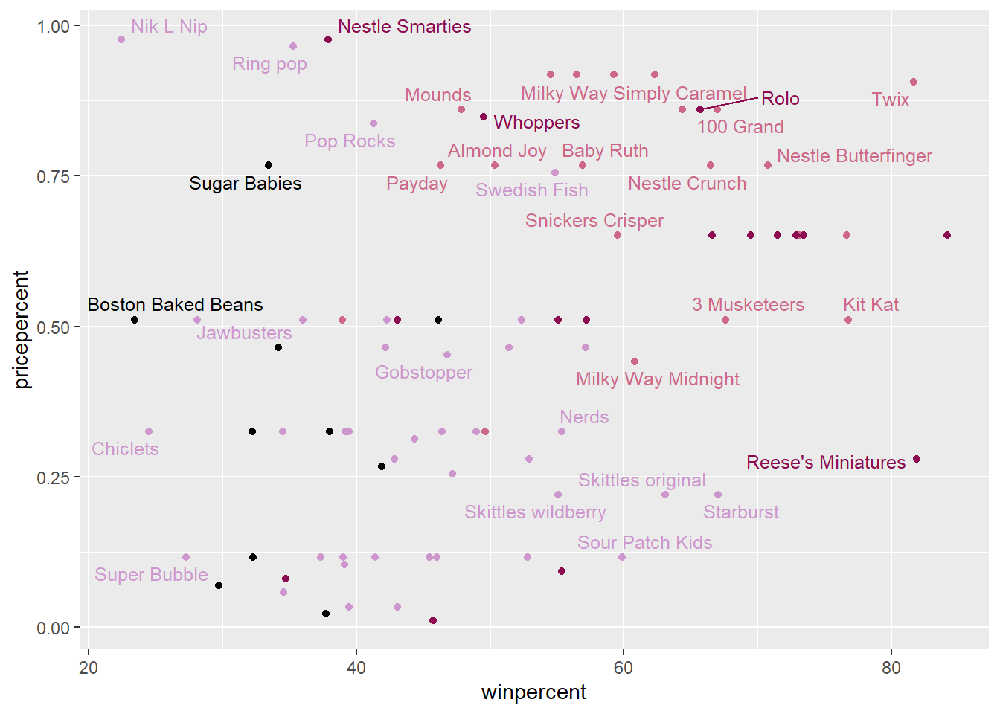
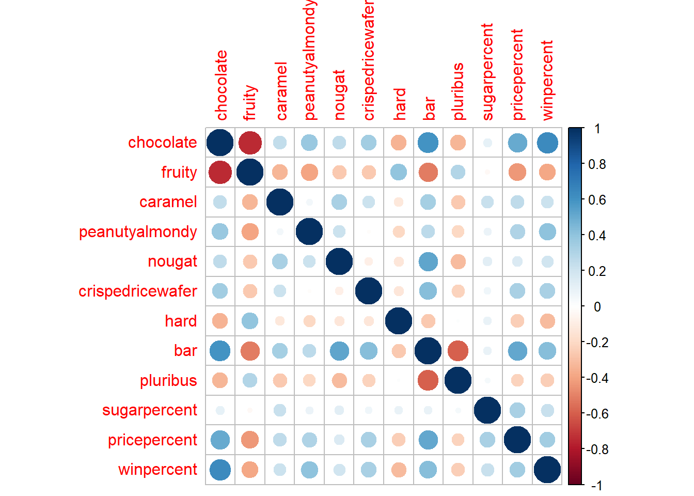

Welch Two Sample t-test
data: candy$winpercent[as.logical(candy$chocolate)] and candy$winpercent[as.logical(candy$fruity)]
t = 6.2582, df = 68.882, p-value = 2.871e-08
alternative hypothesis: true difference in means is not equal to 0
95 percent confidence interval:
11.44563 22.15795
sample estimates:
mean of x mean of y
60.92153 44.11974
These results are statistically significant with a p-value of 2.87e-08.
Overall Candy Rankings
Q13: What are the five least liked candy types in this set?
library(dplyr)
Attaching package: 'dplyr'
The following objects are masked from 'package:stats':
filter, lag
The following objects are masked from 'package:base':
intersect, setdiff, setequal, union
candy %>%arrange(winpercent) %>%head(5)
chocolate fruity caramel peanutyalmondy nougat
Nik L Nip 0 1 0 0 0
Boston Baked Beans 0 0 0 1 0
Chiclets 0 1 0 0 0
Super Bubble 0 1 0 0 0
Jawbusters 0 1 0 0 0
crispedricewafer hard bar pluribus sugarpercent pricepercent
Nik L Nip 0 0 0 1 0.197 0.976
Boston Baked Beans 0 0 0 1 0.313 0.511
Chiclets 0 0 0 1 0.046 0.325
Super Bubble 0 0 0 0 0.162 0.116
Jawbusters 0 1 0 1 0.093 0.511
winpercent
Nik L Nip 22.44534
Boston Baked Beans 23.41782
Chiclets 24.52499
Super Bubble 27.30386
Jawbusters 28.12744
The top 5 least liked candies are Nik L Nip, Boston Baked Beans, Chiclets, Super Bubble, and Jawbusters.
Q14: What are the top 5 all time favorite candy types out of this set?
Q16: This is very ugly, use the reorder() function to get the bars sorted by winpercent?
ggplot(candy, aes(winpercent, reorder(rownames(candy), winpercent))) +geom_col() +labs(x ="Win Percent", y =NULL)
# Still ugly. Can we adjust the labels so we can read them better?ggsave('barplot1.png', width =7, height =10)
You can insert any image using this markdown syntax. 
Now let’s add color to our ggplot. We need to make a custom color vector.
# Start with an all black vector of colors.my_cols <-rep("black", nrow(candy))my_cols[as.logical(candy$chocolate)] ="deeppink4"my_cols[as.logical(candy$bar)] ="palevioletred3"my_cols[as.logical(candy$fruity)] ="plum3"
if we want to see what is a good candy to buy in terms of winpercent and pricepercent, we can plot these two variables and then see the best candy for the least amount of money.
Warning: ggrepel: 53 unlabeled data points (too many overlaps). Consider
increasing max.overlaps

Q19: Which candy type is the highest ranked in terms of winpercent for the least money - i.e. offers the most bang for your buck?
Reese’s miniatures have the highest winpercent for the lowest pricepercent.
Q20: What are the top 5 most expensive candy types in the dataset and of these which is the least popular?
ord <-order(candy$pricepercent, decreasing =TRUE)head( candy[ord,c(11,12)], n=5 )
pricepercent winpercent
Nik L Nip 0.976 22.44534
Nestle Smarties 0.976 37.88719
Ring pop 0.965 35.29076
Hershey's Krackel 0.918 62.28448
Hershey's Milk Chocolate 0.918 56.49050
The top 5 most expensive candies are Nik L Nip, Nestle Smarties, Ring pop, Hershey’s Krackel, and Hershey’s Milk Chocolate. The least popular of these is Nik L Nip.
5 Exploring the correlation structure.
library(corrplot)
corrplot 0.92 loaded
cij <-cor(candy)corrplot(cij)

Q22: Examining this plot what two variables are anti-correlated (i.e. have minus values)?
Fruity and chocolate are two variables that are anticorrelated.
Q23: Similarly, what two variables are most positively correlated?
Chocolate and winpercent are the two variables that are the most positively correlated.
On to PCA
The main function for this is called prcom() and here we know we need to scale our data with the scale=TRUE argument.
ggplot(my_data) +aes(PC1, PC2, label =rownames(candy)) +geom_point(col=my_cols) +geom_text_repel(col=my_cols) +labs(title="PCA Candy Space Map", subtitle ="Colored by type: chocolate bar (pink), chocolate other (burgundy), fruity (lavender), other (black)", caption="Data from 538")
Warning: ggrepel: 31 unlabeled data points (too many overlaps). Consider
increasing max.overlaps
Q24: What original variables are picked up strongly by PC1 in the positive direction? Do these make sense to you?
The fruity, pluribus, and hard variables are picked up strongly by PC1 in the positive direction. This makes sense, as these variables are all correlated with each other, whereas the remaining variables in the negative direction are all correlated with each other.